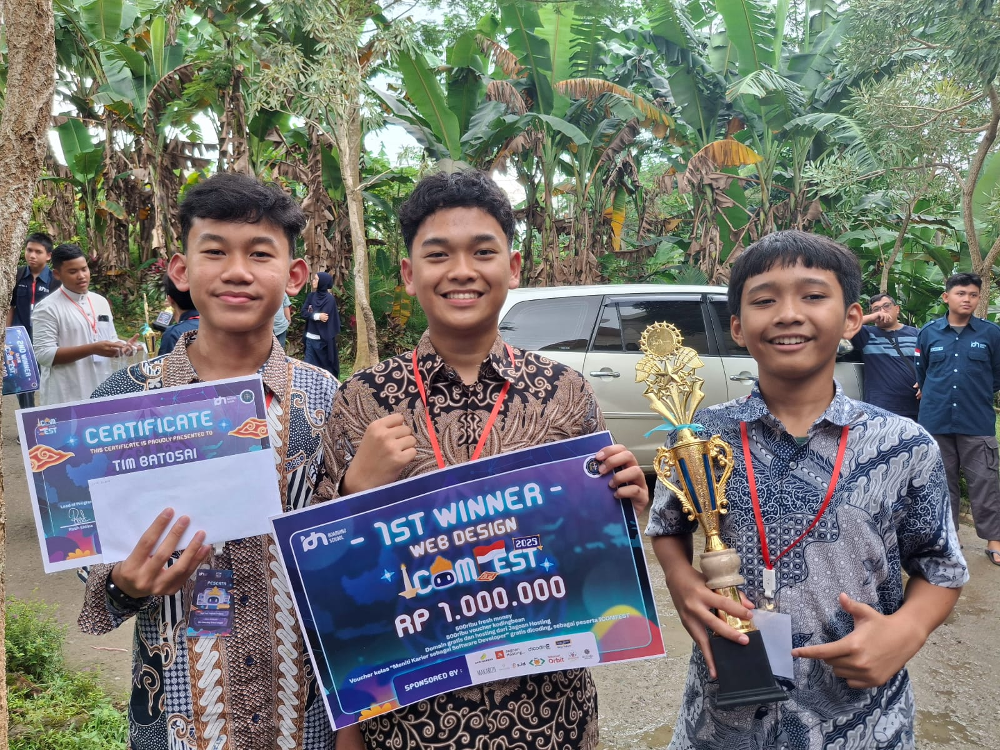

JAGOAN IT
PINTER NGAJI
Merupakan slogan dari IDN Boarding School yang mana bukan berarti hanya expert ilmu IT tetapi ilmu akhirat.


IDN BOARDING SCHOOL
Islamic Development Network (IDN) adalah lembaga pendidikan berbasis IT yang memandang pendidikan sebagai investasi terbaik dalam kehidupan manusia, karena melalui pendidikan, kita dapat membangun karakter dan peradaban yang lebih maju.
1000+
Alumni Sukses
1 Milyar+
Penghasilan Siswa


SEKOLAH
IT TERBAIK
Terbukti dengan lulusan kami yang diatas standard atau bisa dikatakan expert

TENAGA PENGAJAR
PROFESIONAL
S2 UI CCIE, Alumni STDI Imam Syafii Jember, Florida USA, dll

PROGRAM
UNGGULAN
Menumbuh kembangkan soft skill maupun skill kompetensi melalui IDN Mengajar, Bootcamp, Leadership Camp, English Camp, IT Camp, dan masih banyak lagi.

PESANTREN
BERBASIS IT
IDN Fokus ke 3 Mata Pelajaran diantaranya IT, English & Diniyah, tidak hanya itu IDN juga menerapkan Program Tahfidz.

FULL
PRAKTEK
Sekolah full praktek agar siap terjun di lapangan.
Jurusan di IDN Boarding School
Desain Komunikasi Visual
DKV (Desain Komunikasi Visual) bukan cuma soal estetika, tapi juga soal komunikasi. Kamu diajak untuk berpikir kreatif, peka terhadap tren, dan bisa bikin karya yang punya makna.
Rekayasa Perangkat Lunak
RPL (Rekayasa Perangkat Lunak) bukan cuma soal ngoding, tapi juga soal logika dan solusi. Kamu diajak untuk berpikir sistematis, bikin aplikasi web dan mobile pakai PHP, MySQL, Laravel, sampai Flutter.
Teknik Komputer Jaringan
TKJ (Teknik Komputer dan Jaringan) bukan cuma belajar kabel dan jaringan, tapi juga soal bagaimana komputer saling terhubung dan bekerja. Kamu diajak memahami dasar jaringan komputer, instalasi, hingga konfigurasi alat seperti Cisco dan Mikrotik.
Project Jurusan
🏆 Prestasi Siswa
Bukti nyata kualitas pendidikan dan dedikasi Siswa IDN
100+ Prestasi Nasional & Internasional
Juara 1 Lomba Web Design Nasional
Athallah Muhammad Ghiyast Qinthara
Rafif Sava Adyvka Pratama
Abdullah
Juara 2 Lomba Speech Nasional
Maulana Moreno Ibrahim
Juara 2 Lomba Informatika Nasional
Moch. Guntur Budi Pratama


"Anak saya dulu cukup pendiam dan kurang percaya diri. Tapi setelah belajar di IDN, ia jadi lebih terbuka dan berani tampil di depan umum..."

"Yang paling saya kagumi dari IDN adalah bagaimana mereka menanamkan nilai-nilai Islam dalam setiap aktivitas anak-anak..."

 Biaya Pendidikan
Biaya Pendidikan
Catatan: Biaya yang sudah di transfer tidak bisa dikembalikan dengan kondisi dan alasan apapun

IDN Jonggol
Sebagai kampus pusat IDN Boarding School, cabang Jonggol menjadi tempat utama kegiatan akademik dan manajemen.

IDN Akhwat
IDN Akhwat adalah cabang khusus untuk santri putri yang ingin menimba ilmu teknologi sekaligus memperdalam nilai-nilai Islam.

IDN Pamijahan
Cabang Pamijahan dikenal dengan suasananya yang sejuk dan religius, berada di kawasan pegunungan Bogor.

IDN Solo
Cabang Solo hadir sebagai perluasan misi IDN untuk menjangkau lebih banyak pelajar di Jawa Tengah dan sekitarnya.

IDN Sentul
IDN Sentul menjadi salah satu cabang dengan fasilitas modern dan lokasi yang strategis dekat pusat kota Bogor.

IDN Malang
Berlokasi di lingkungan yang sejuk dan kondusif, IDN Malang menjadi cabang yang mengedepankan kreativitas dan eksplorasi.


Alur Pendaftaran Santri Baru
Berikut ini beberapa tahapan untuk bisa gabung jadi santri IDN Boarding School

Ayo Daftarkan Sekarang Juga!
Daftar Santri Baru